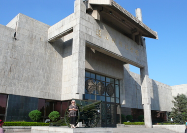
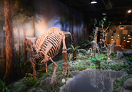
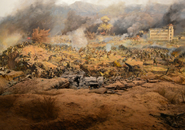

世界上面积最大的海上世界园林博览会
锦州世博园位于锦州市龙栖湾新区，是2013中国锦州世界园林博览会的主体园区。园区总占地面积7平方公里，其中陆地面积3.3平方公里，海域面积3.7平方公里。 园区共规划建设各类展园108个，每个展园内各种人文艺术景观；一园一花，百园百卉，呈现出“一园一花一特色，好山好水好家园”的人间美景。“六区”分别为山地园林区、奇迹园林区、林地景观区、海岛园林区、海滨园林区和海上活动区。即“高山流水”、“锦绣之州”、“海风林韵”、“奇幻海洋”、“浪漫之滨”和“观海听涛”六大旅游特色园区。
锦州世界园林博览会紧扣海洋主题，以倡导保护地球大自然，改善居住环境，传播“海洋、绿色、欢聚、和谐”的思想，力求理念在继承世界园林博览会传统的基础上发展和创新，充分体现世界园林博览会共同追求人与自然和谐，物质与能源的循环利用，为建设可持续发展社会而不懈努力的宗旨。
首座海上世博园2014年5月1日全面开园。五月正值郁金花期，锦州世博园的郁金香花带2013年给游客留下了美好印象，并且成功打破了大世界基尼斯纪录，成为世界上最长的郁金香花谷。据了解，2014年比2013年增加种植了400万株郁金香花。 [3] 锦州世博园栽植郁金香超过44000平方米，包括荷兰角、贝隆夫人、舍利、橙色皇帝、美人、范依克、粉色浪漫、黄色激情等100多个品种。据了解，郁金花花期预计在5月1日至5月25日左右。 [3] 锦州世博园在2013年的基础上对园区部分景观、场馆、设施进行了多项整合，更新台湾大花园为民俗风情馆，以台湾民俗为主题，给内地游客带来不一样的感受。 [3] 2014年5月1日至3日，中国著名水画大师莅临锦州世博园，完成“从春耕文明走向海洋文明”的20米长卷国画创作。五月上旬郁金花文化节期间，锦州世博园将举办专业摇滚歌手张昊演唱专场、“妈妈来笑我来画”郁金香花谷现场创作儿童画、“千人摄影师拍世园”等多项活动。